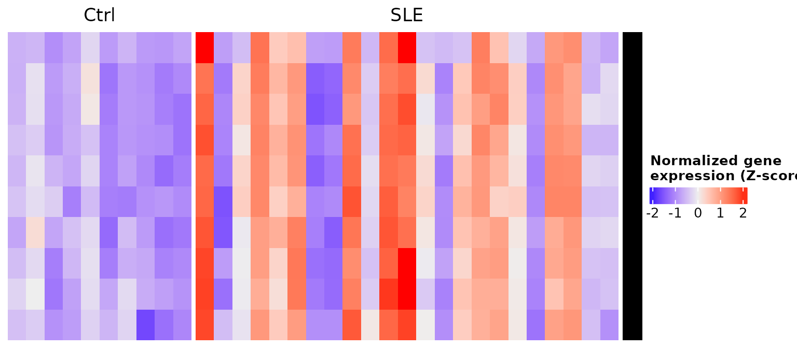
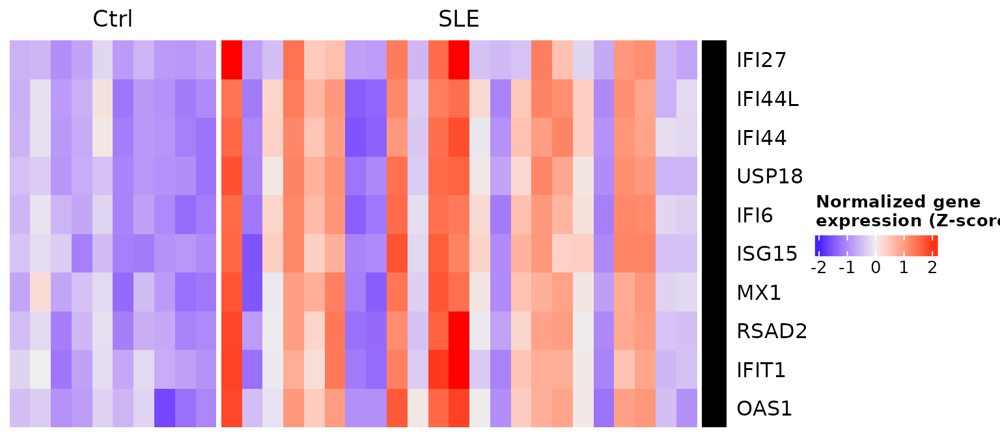
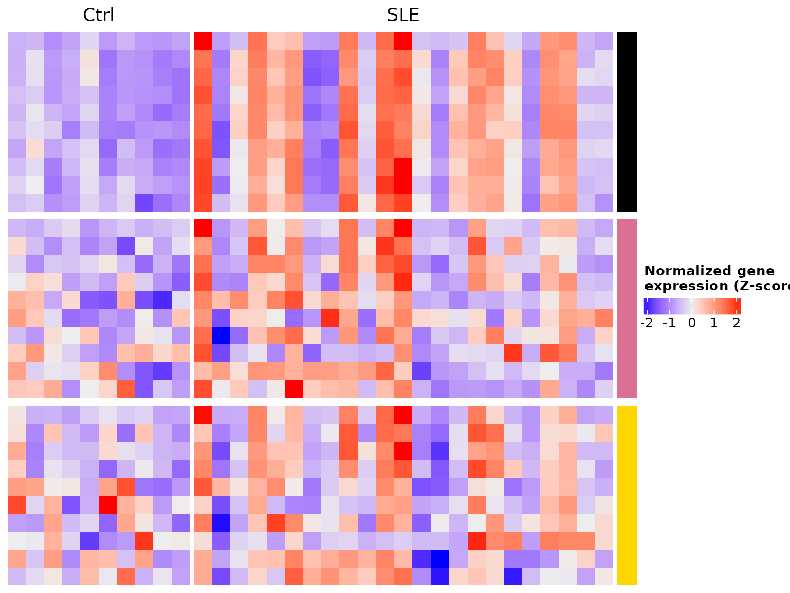
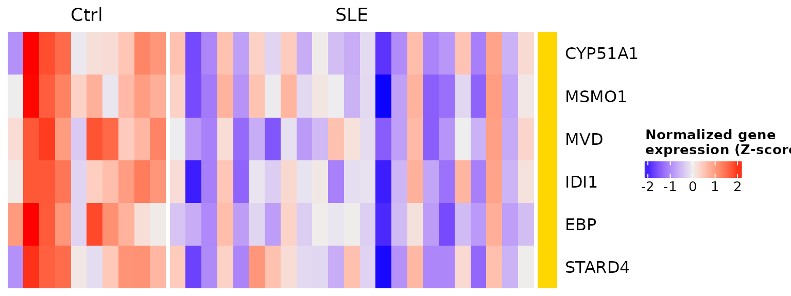
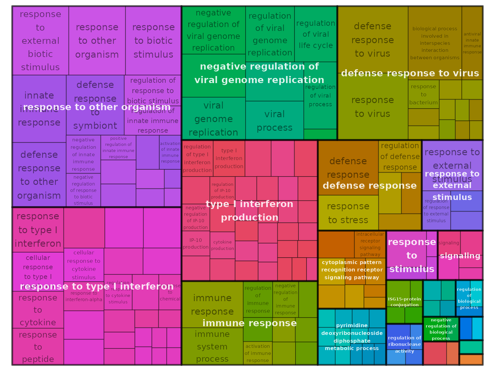
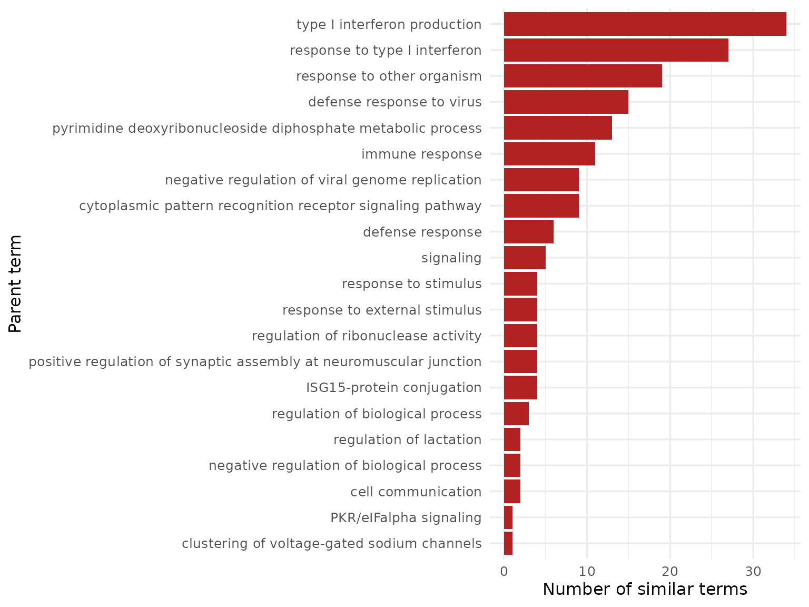

How to use the package functions
get_heatmap_mat(), create_heatmap(), processGO() y Reduce_GOTerm()
2026-10-28
Source:vignettes/functions_en.Rmd
functions_en.RmdWelcome
Besides the data, GeneExprLupusMx includes four
functions used throughout the lessons. This guide shows how to
use them with your own data, step by step and with examples you
can copy.
| Function | What is it for? | Used in |
|---|---|---|
get_heatmap_mat() |
Turns a DESeqDataSet into a z-score matrix ready for a
heatmap
|
Lesson 3 |
create_heatmap() |
Draws a ComplexHeatmap heatmap with a color
annotation; several can be stacked |
Lesson 3 |
processGO() |
Reduces the redundant GO terms of one enrichment file and plots the parent terms | — |
Reduce_GOTerm() |
Applies processGO() to all the
enrichment files in a folder |
— |
What you need to know beforehand: you should have completed the lessons From RNA-seq counts to data exploration (VST and z-scores) and Biological functions of differentially expressed genes (functional enrichment).
Estimated time: 45 minutes.
Glossary
-
VST (variance stabilizing transformation):
DESeq2transformation that makes the variance independent of the mean expression. - z-score: how many standard deviations a value is from the gene mean; it allows comparing genes with different expression levels.
- Semantic similarity: how similar two GO terms are according to their position in the Gene Ontology hierarchy.
- Parent term: the term that represents a group of similar GO terms.
- Treemap: plot of nested rectangles; here each rectangle is a term and the color indicates its parent term.
1. Setup
library(GeneExprLupusMx) # package data and functions
library(DESeq2) # DESeqDataSet object
library(ComplexHeatmap) # heatmaps
library(dplyr) # table manipulationColors (the same as in the lessons):
2. get_heatmap_mat(): from the
DESeqDataSet to z-scores
get_heatmap_mat() takes a DESeqDataSet and
does three things:
- Applies the VST transformation.
- Removes genes without variation across samples.
- Converts each gene to z-scores and orders the columns as you indicate.
We use the dds checkpoint and keep the monocytes. Since
the subset has a single cell type, we change the design to
~ Group:
mo <- dds[, dds$Cell_type == "monocyte"]
design(mo) <- ~ Group # a single cell type: compare groups only
mo_order <- colnames(mo)[order(mo$Group)] # controls first, then patients
mo_mat <- get_heatmap_mat(mo, sample_order = mo_order)
dim(mo_mat) # genes x samples
#> [1] 13569 33
round(mo_mat[1:3, 1:4], 2)
#> QR011_0 QR013_0 QR022_0 QR024_0
#> A1BG 0.6 -0.11 0.56 -0.20
#> A1BG-AS1 0.6 0.45 -2.51 -0.21
#> A2M -0.2 0.48 2.84 0.30Each row has mean 0 and standard deviation 1:
summary(round(rowMeans(mo_mat), 10))
#> Min. 1st Qu. Median Mean 3rd Qu. Max.
#> 0 0 0 0 0 0
summary(apply(mo_mat, 1, sd))
#> Min. 1st Qu. Median Mean 3rd Qu. Max.
#> 1 1 1 1 1 1With your data: any DESeqDataSet works.
The sample_order argument is optional; if you omit it, the
columns keep the order of the object.
3. create_heatmap(): a heatmap ready to
combine
create_heatmap() draws the matrix with
ComplexHeatmap, adds a color bar on the right (for example,
the cell type color) and lets you split the columns with
split. We plot the interferon-stimulated genes (ISGs) from
lesson 2 in monocytes, split by group:
isg_extended <- c("IFI27", "IFI44L", "IFI44", "USP18", "IFI6", "ISG15", "MX1", "RSAD2", "IFIT1", "OAS1")
ht_mo <- create_heatmap(mo_mat[isg_extended, ],
color = cell_color[["monocyte"]],
split = mo$Group[match(mo_order, colnames(mo))])
draw(ht_mo)
The function does not show gene names, so it works the same with
thousands of genes. Since it returns a Heatmap object, you
can combine it with other ComplexHeatmap pieces; for
example, add the names with a text annotation:
draw(ht_mo + rowAnnotation(gene = anno_text(isg_extended)))
3.1 Stacking several heatmaps
The advantage of create_heatmap() is that the
heatmaps share the same format and can be
stacked with %v%. For that, the columns
must be the same in all of them: we use each volunteer identifier (the
part of sample_ID before the underscore) and the same order
in the three cell types.
volunteer_order <- unique(sub("_.*", "", mo_order)) # same volunteer order for all
isg_mats <- lapply(c("monocyte", "moDC", "tolDC"), function(cell) {
sub_dds <- dds[, dds$Cell_type == cell]
design(sub_dds) <- ~ Group
mat <- get_heatmap_mat(sub_dds)
colnames(mat) <- sub("_.*", "", colnames(mat)) # QR011_0 -> QR011
mat[isg_extended, volunteer_order]
})
names(isg_mats) <- c("monocyte", "moDC", "tolDC")
sapply(isg_mats, dim)
#> monocyte moDC tolDC
#> [1,] 10 10 10
#> [2,] 33 33 33
group_split <- volunteer_info$Group[match(volunteer_order, volunteer_info$Volunteer_ID)]
ht_list <- create_heatmap(isg_mats$monocyte, cell_color[["monocyte"]], group_split) %v%
create_heatmap(isg_mats$moDC, cell_color[["moDC"]], group_split) %v%
create_heatmap(isg_mats$tolDC, cell_color[["tolDC"]], group_split)
draw(ht_list)
ISGs are high mainly in the monocytes of some patients (black block, SLE columns), as we saw in lesson 2.
Challenge 1. Make a heatmap of tolDCs with
the cholesterol synthesis genes from lesson 7 (CYP51A1,
MSMO1, MVD, IDI1,
EBP, STARD4), split by group.
Show solution
chol_genes <- c("CYP51A1", "MSMO1", "MVD", "IDI1", "EBP", "STARD4")
tol <- dds[, dds$Cell_type == "tolDC"]
design(tol) <- ~ Group
tol_order <- colnames(tol)[order(tol$Group)]
tol_mat <- get_heatmap_mat(tol, sample_order = tol_order)
ht_tol <- create_heatmap(tol_mat[chol_genes, ], color = cell_color[["tolDC"]],
split = tol$Group[match(tol_order, colnames(tol))])
draw(ht_tol + rowAnnotation(gene = anno_text(chol_genes)))
In the patients’ tolDCs these genes tend to be lower: it is the weaker induction of cholesterol synthesis we found in lesson 7.
4. processGO(): reducing redundant GO terms
An enrichment analysis usually returns hundreds of GO
terms, many nearly identical (“response to virus”, “defense
response to virus”…). processGO() uses the
rrvgo package to group them by semantic
similarity and summarize them into parent
terms.
The function reads an .RData file containing a
single table with three columns:
| Column | Content |
|---|---|
go_id |
Term identifier (GO:0051607) |
term |
Term name |
p.adjust |
Adjusted p-value |
The file name must follow the pattern
UP_GO_<name>.RData or
DOWN_GO_<name>.RData. We prepare one with the GO:BP terms of the genes that go up in the
patients’ monocytes (go_results checkpoint from lesson
4):
go_dir <- file.path(tempdir(), "go_input") # input files
out_dir <- file.path(tempdir(), "go_output") # .RData results
fig_dir <- file.path(tempdir(), "go_figures") # plots
for (d in c(go_dir, out_dir, fig_dir)) dir.create(d, showWarnings = FALSE)
go_table <- go_results %>%
filter(query == "SLE_UP_monocyte", source == "GO:BP") %>%
transmute(go_id = term_id, term = term_name, p.adjust = p_value)
nrow(go_table)
#> [1] 183
save(go_table, file = file.path(go_dir, "UP_GO_monocyte.RData"))Now we run processGO(). It needs at least 40 distinct GO
terms; with fewer, it skips the file:
processGO(f = file.path(go_dir, "UP_GO_monocyte.RData"),
direction = "UP", outdir = out_dir, figdir = fig_dir)The function saves two .RData files and two plots:
list.files(out_dir)
#> [1] "geneListAndGOterms_UP_monocyte.RData"
#> [2] "reducedTerms_simMatrix_UP_monocyte.RData"
list.files(fig_dir)
#> [1] "GOTerm_UP_ReducedBar_monocyte.png" "GOTerm_UP_Treemap_monocyte.png"reducedTerms contains each term with its parent
term:
load(file.path(out_dir, "reducedTerms_simMatrix_UP_monocyte.RData"))
reducedTerms %>%
dplyr::count(parentTerm, sort = TRUE) %>%
head(5)
#> parentTerm n
#> 1 type I interferon production 34
#> 2 response to type I interferon 27
#> 3 response to other organism 19
#> 4 defense response to virus 15
#> 5 pyrimidine deoxyribonucleoside diphosphate metabolic process 13The 179 terms are summarized into 21 parent terms, led by type I interferon production and response: the interferon signature of the patients’ monocytes.
Besides saving them as PNG files in figdir, you can
redraw the plots directly from reducedTerms. The
treemap shows all the terms, colored by their parent term:
rrvgo::treemapPlot(reducedTerms)
The bar plot shows how many terms each parent term groups:
library(ggplot2)
reducedTerms %>%
dplyr::count(parentTerm, name = "count") %>%
ggplot(aes(x = reorder(parentTerm, count), y = count)) +
geom_col(fill = "firebrick") +
coord_flip() +
labs(x = "Parent term", y = "Number of similar terms") +
theme_minimal(base_size = 12)
5. Reduce_GOTerm(): many files at once
If you have several lists (for example, one per cell type and
direction), save one file per list in the same folder and use
Reduce_GOTerm(). The function finds all the
UP_GO_*.RData and DOWN_GO_*.RData files and
applies processGO() to each one:
lists <- c(DOWN_GO_moDC = "SLE_DOWN_moDC", UP_GO_tolDC = "SLE_UP_tolDC")
for (f in names(lists)) {
go_table <- go_results %>%
filter(query == lists[[f]], source == "GO:BP") %>%
transmute(go_id = term_id, term = term_name, p.adjust = p_value)
save(go_table, file = file.path(go_dir, paste0(f, ".RData")))
}
list.files(go_dir)
#> [1] "DOWN_GO_moDC.RData" "UP_GO_monocyte.RData" "UP_GO_tolDC.RData"
Reduce_GOTerm(indir = go_dir, outdir = out_dir, figdir = fig_dir)Reduce_GOTerm() processes the three files and saves
their results in the same format as processGO(). Each file
takes about a minute, because rrvgo computes the similarity
between all terms.
Challenge 2. Run processGO() on the
DOWN_GO_moDC.RData file. Which parent term groups the most
terms?
Show solution
processGO(f = file.path(go_dir, "DOWN_GO_moDC.RData"),
direction = "DOWN", outdir = out_dir, figdir = fig_dir)
load(file.path(out_dir, "reducedTerms_simMatrix_DOWN_moDC.RData"))
dplyr::count(reducedTerms, parentTerm, sort = TRUE) %>% head(3)The most frequent parent term is “T cell
activation”: the genes that go down in the patients’ moDCs are
mostly T lymphocyte genes (CD28, CD40LG,
ZAP70), as we saw in lesson 4.
6. Summary
| Function | Input | Output |
|---|---|---|
get_heatmap_mat() |
DESeqDataSet |
z-score matrix (genes × samples) |
create_heatmap() |
Matrix, color and split
|
Heatmap object; stack it with %v%
|
processGO() |
One UP_GO_*.RData or DOWN_GO_*.RData
file |
Reduced terms (.RData), treemap and bars
(.png) |
Reduce_GOTerm() |
A folder with several files | The same as processGO(), for each file |
Common beginner mistakes
-
Forgetting to change the design when taking a
single cell type:
~ Cell_type + Groupmakes no sense with only one cell type. -
Stacking heatmaps with different columns:
%v%needs the same columns, in the same order. -
Misnaming the GO files:
Reduce_GOTerm()only findsUP_GO_<name>.RDataandDOWN_GO_<name>.RDatafiles. -
Saving more than one object in the
.RData:processGO()expects exactly one table per file.
To go back to the lessons, see Get started with GeneExprLupusMx.
↑ Back to topSession information
sessionInfo()
#> R version 4.6.1 (2026-06-24)
#> Platform: x86_64-pc-linux-gnu
#> Running under: Ubuntu 24.04.5 LTS
#>
#> Matrix products: default
#> BLAS: /usr/lib/x86_64-linux-gnu/openblas-pthread/libblas.so.3
#> LAPACK: /usr/lib/x86_64-linux-gnu/openblas-pthread/libopenblasp-r0.3.26.so; LAPACK version 3.12.0
#>
#> locale:
#> [1] LC_CTYPE=C.UTF-8 LC_NUMERIC=C LC_TIME=C.UTF-8
#> [4] LC_COLLATE=C.UTF-8 LC_MONETARY=C.UTF-8 LC_MESSAGES=C.UTF-8
#> [7] LC_PAPER=C.UTF-8 LC_NAME=C LC_ADDRESS=C
#> [10] LC_TELEPHONE=C LC_MEASUREMENT=C.UTF-8 LC_IDENTIFICATION=C
#>
#> time zone: UTC
#> tzcode source: system (glibc)
#>
#> attached base packages:
#> [1] grid stats4 stats graphics grDevices utils datasets
#> [8] methods base
#>
#> other attached packages:
#> [1] ggplot2_4.0.3 dplyr_1.2.1
#> [3] ComplexHeatmap_2.28.0 DESeq2_1.52.0
#> [5] SummarizedExperiment_1.42.0 Biobase_2.72.0
#> [7] MatrixGenerics_1.24.0 matrixStats_1.5.0
#> [9] GenomicRanges_1.64.0 Seqinfo_1.2.0
#> [11] IRanges_2.46.0 S4Vectors_0.50.3
#> [13] BiocGenerics_0.58.1 generics_0.1.4
#> [15] GeneExprLupusMx_0.0.0.9000
#>
#> loaded via a namespace (and not attached):
#> [1] DBI_1.3.0 rlang_1.3.0 magrittr_2.0.5
#> [4] clue_0.3-68 GetoptLong_1.1.1 gridBase_0.4-7
#> [7] otel_0.2.0 compiler_4.6.1 RSQLite_3.53.3
#> [10] png_0.1-9 systemfonts_1.3.2 vctrs_0.7.3
#> [13] shape_1.4.6.1 pkgconfig_2.0.3 crayon_1.5.3
#> [16] fastmap_1.2.0 XVector_0.52.0 labeling_0.4.3
#> [19] promises_1.5.0 rmarkdown_2.32 ragg_1.5.2
#> [22] bit_4.6.0 xfun_0.62 cachem_1.1.0
#> [25] jsonlite_2.0.0 blob_1.3.0 later_1.4.8
#> [28] DelayedArray_0.38.2 BiocParallel_1.46.0 cluster_2.1.8.2
#> [31] parallel_4.6.1 R6_2.6.1 bslib_0.12.0
#> [34] RColorBrewer_1.1-3 reticulate_1.47.0 jquerylib_0.1.4
#> [37] GOSemSim_2.38.3 iterators_1.0.14 Rcpp_1.1.2
#> [40] knitr_1.52 httpuv_1.6.17 Matrix_1.7-5
#> [43] igraph_2.3.4 tidyselect_1.2.1 abind_1.4-8
#> [46] yaml_2.3.12 doParallel_1.0.17 codetools_0.2-20
#> [49] lattice_0.22-9 tibble_3.3.1 withr_3.0.3
#> [52] shiny_1.14.0 KEGGREST_1.52.2 S7_0.2.2
#> [55] askpass_1.2.1 evaluate_1.0.5 treemap_2.4-4
#> [58] desc_1.4.3 xml2_1.6.0 circlize_0.4.18
#> [61] Biostrings_2.80.2 pillar_1.11.1 foreach_1.5.2
#> [64] NLP_0.3-3 scales_1.4.0 xtable_1.8-8
#> [67] glue_1.8.1 slam_0.1-56 pheatmap_1.0.13
#> [70] tools_4.6.1 tm_0.7-20 data.table_1.18.6.1
#> [73] RSpectra_0.16-2 locfit_1.5-9.12 fs_2.1.0
#> [76] umap_0.2.10.0 AnnotationDbi_1.74.0 colorspace_2.1-4
#> [79] cli_3.6.6 rappdirs_0.3.4 textshaping_1.0.5
#> [82] S4Arrays_1.12.1 gtable_0.3.6 yulab.utils_0.2.5
#> [85] sass_0.4.10 digest_0.6.39 rrvgo_1.24.0
#> [88] wordcloud_2.6 SparseArray_1.12.3 ggrepel_0.9.8
#> [91] rjson_0.2.23 org.Hs.eg.db_3.23.1 farver_2.1.2
#> [94] memoise_2.0.1 htmltools_0.5.9 pkgdown_2.2.1
#> [97] lifecycle_1.0.5 httr_1.4.9 GlobalOptions_0.1.4
#> [100] GO.db_3.23.1 mime_0.13 openssl_2.4.2
#> [103] bit64_4.8.6